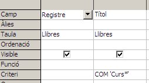
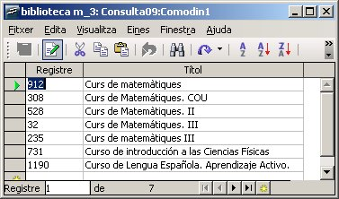
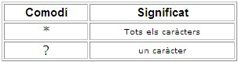
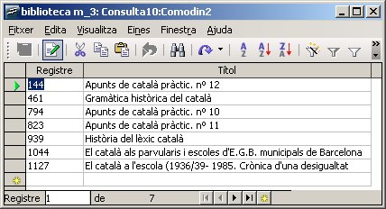
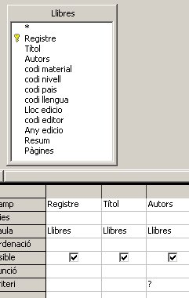
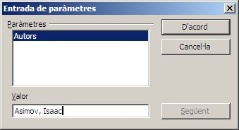
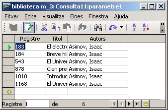
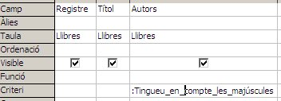
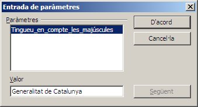
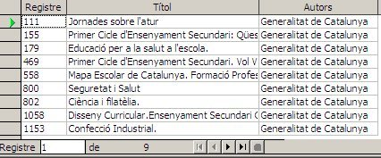

I per donar una visió més exhaustiva de les consultes, ens faltava tractar dos temes que es detallen a continuació:
De vegades ens interessarà fer una consulta més oberta, és a dir, que una mateixa pregunta ens serveixi per més d'un criteri. Per posar-ne un exemple de pregunta podriem dir:
Per fer-ho, necessitem utilitzar els caràcters comodí. Així una solució a aquesta pregunta seria: COM 'Curs*' (Hem de pensar que diferencia majúscules de minúscules, així doncs en el nostre exemple COM 'curs*” no donaria cap resultat.
Mireu la següent imatge:

Com podem veure en la resposta, el caràcter *
fa que doni per resposta qualsevol paraula que hi hagi al darrera.
Estem dient en realitat, qualsevol títol que comenci per la paraula
Curs.

Deseu la consulta amb el nom de Consulta09:Comodin1
Així, i com a resum, podem dir que hi ha comodins dels següents tipus:

A més a més, si utilitzem l'asterisc abans i després d'una
paraula o lletra, voldrà dir que contingui aquesta cadena en qualsevol
part del nom. Per exemple: COM '*català*' ens donarà per resposta el
que mostra la imatge següent:

Feu aquesta consulta i deseu-la amb el nom de Consulta10:Comodin2
Un pas més enllà de les consultes són els anomenats paràmetres.
Seria una pregunta que es fa a la base de dades que queda incompleta i
que en el moment d'executar-la ens deixa omplir amb dades diferents
cada cop que s'executi mitjançant una finestra emergent que ens permet
escriure en ella.
A continuació se'n mostra un exemple.

En ell es pot veure que en el criteri del camp Autors s'hi ha posat un ?
que és el que farà que, en el moment de l'execució de la consulta,
tinguem la finestra emergent del paràmetre, tal com es pot veure en la
imatge següent:

I si hi escrivim “Asimov, Isaac”, aquest en serà el resultat:

Per tant, una mateixa consulta ens pot servir per a moltes
preguntes diferents, només cal que en la finestra emergent del
paràmetre hi escrivim una altra paraula perquè la resposta sigui una
altra. És per tant, molt versàtil.
Desem aquesta consulta amb el nom de: Consulta11:parametre1
En el cas de voler donar més informació a l'usuari es pot posar un paràmetre precedit de dos punts ” : ”
Així un exemple podria ser aquest:

Com podeu veure el paràmetre treu la informació que hem escrit darrera dels dos punts,

i si omplim el quadre inferior amb “Generalitat de Catalunya”, per exemple, ens mostrarà el resultat de la següent imatge:

Desem aquesta consulta amb el nom de: Consulta12:parametre2

|
|

|
|